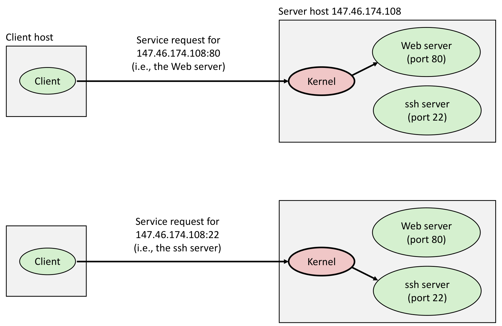
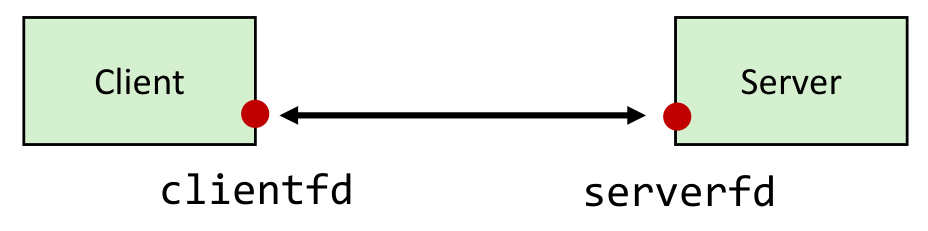
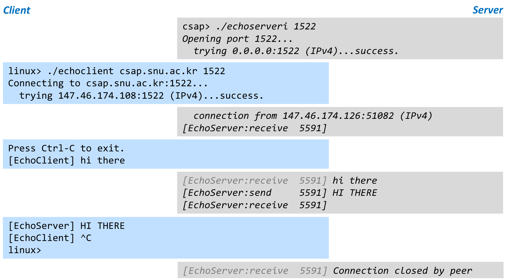
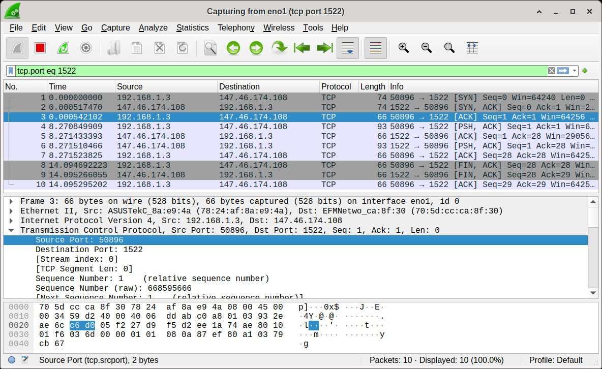
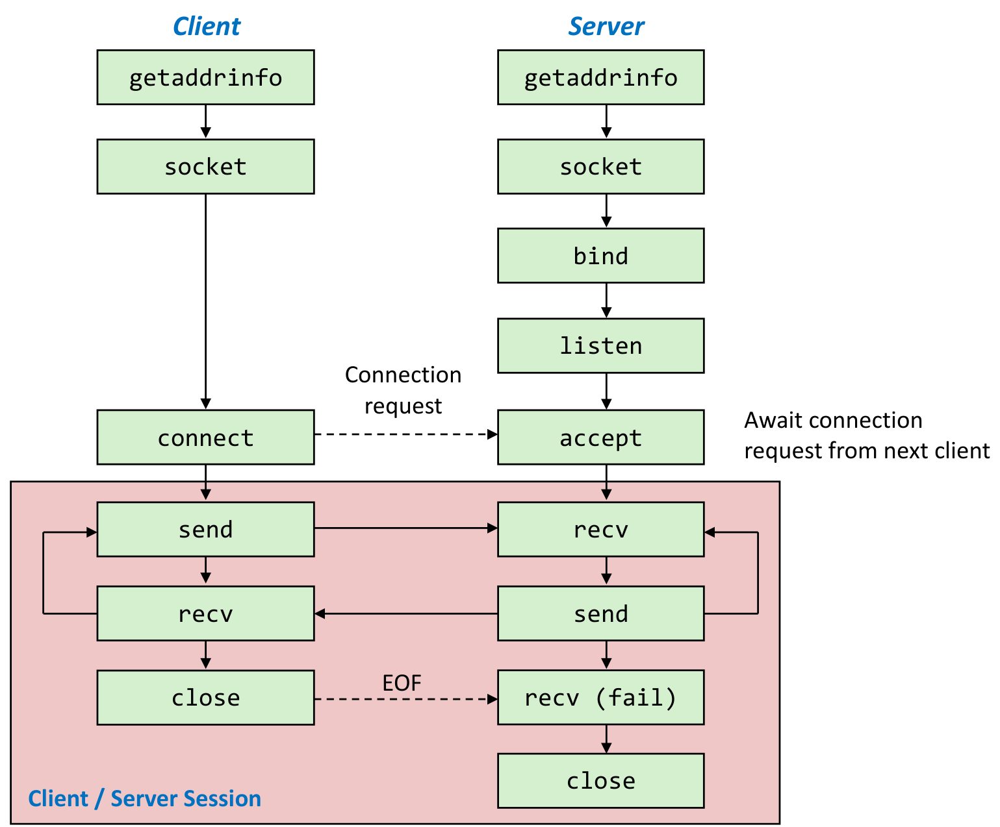
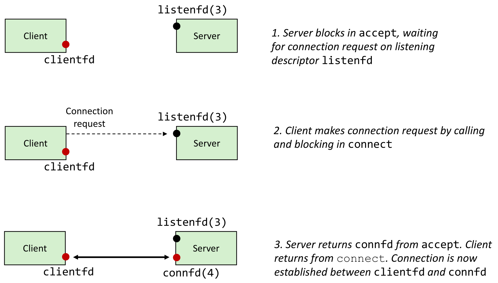
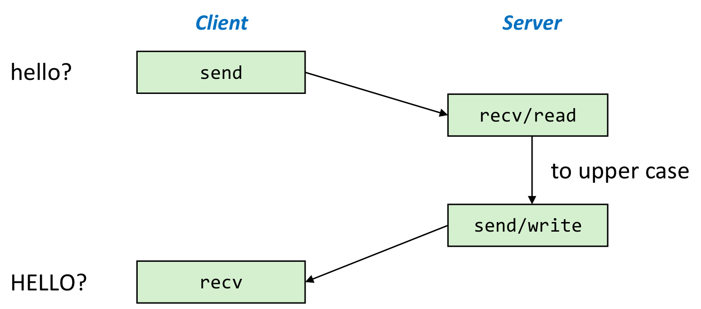

본 포스트는 서울대학교 컴퓨터공학부 시스템 프로그래밍(System Programming, M1522.000800, Fall 2026) 강의 자료 중 17강 — Network Programming: Programmer’s View (총 38장)를 바탕으로, 강의를 처음 듣는 독자도 논리적 흐름을 따라갈 수 있도록 재구성한 것입니다. 16강 Computer Networks에 이은 네트워크 프로그래밍(Network Programming) 단원의 두 번째 강의로, 16강이 흐름도로 호출 순서만 보여 준 socket · bind · listen · accept · connect를, 함수 하나하나의 인자와 반환값, 그리고 실제로 동작하는 echo 서버 · 클라이언트 코드로 풀어냅니다. 원본 슬라이드는 영문으로 작성되어 있고, 본문의 대섹션은 개요 슬라이드(Clients, Servers, and Sockets → The Sockets Interface → Summary)와 이를 나누는 세 장의 구분 슬라이드를 따랐으며, 같은 제목이 이어지는 슬라이드(Sockets, The Sockets Interface, Creating a Socket, Creating a Listening/Accepting Socket, Creating a Connecting Socket, 그리고 Server Code와 Client Code의 Continued)는 한 절로 묶었습니다. 듣기 디스크립터와 연결 디스크립터의 구분, connect/accept 그림은 이 과목의 교재 Bryant & O’Hallaron, Computer Systems: A Programmer’s Perspective (3rd ed.) 11.4절(소켓 인터페이스)의 내용에 대응합니다. 슬라이드의 echo 서버 · 클라이언트 코드는 오류 처리를
error processing이라는 말로 줄여 놓았으므로, 이 글에서는 헤더와MAX_LINE정의를 채우고 그 자리를return -1;로 바꾸어 그대로 컴파일되게 했으며, 해당 위치에 그 사실을 밝혔습니다. 슬라이드의 함수 원형과 본문에 있는 오타도 나오는 자리에서 바로잡았습니다.
한 줄 요약 (TL;DR)
“프로그래머에게 네트워크 통신이란, getaddrinfo로 얻은 주소 목록을 따라가며 서버는 socket → bind → listen → accept로, 클라이언트는 socket → connect로 디스크립터를 연 뒤, 그 디스크립터를 읽고 쓰는 일입니다.”
클라이언트는 서버 소켓 주소의 IP 주소로 호스트를, 잘 알려진 포트로 서비스를 찾아가고, 서버는 흔히 부팅 때 시작되어 그 포트에서 요청을 기다리는 오래 사는 프로세스(데몬)입니다. getaddrinfo는 힌트(
AI_PASSIVE여부, 주소 계열, 소켓 종류)에 맞는 addrinfo 연결 리스트를 돌려주고, 서버는 그 노드마다 socket → bind → listen을, 클라이언트는 socket → connect를 시도해 처음 성공한 소켓을 씁니다. 서버의 accept는 한 번 만들어져 서버가 사는 동안 유지되는 듣기 디스크립터에서 연결 요청을 꺼내 연결마다 새 연결 디스크립터를 돌려주며, 이 구분이 여러 클라이언트를 동시에 상대하는 서버의 바탕이 됩니다. 연결이 맺어지면 send · recv(flags가 0이면 write · read와 같습니다)로 바이트를 주고받고, 한쪽의 close는 상대의 recv에 EOF로 전달됩니다. 받은 문자열을 대문자로 돌려주는 echo 서버의 실행 기록과 패킷 캡처는 이 호출들이 TCP의 연결 수립 · 데이터 교환 · 연결 종료로 이어지는 모습을 보여 주고, 강의는 한 번에 한 클라이언트만 받는 반복 서버의 한계와 read · write의 짧은 카운트라는 함정을 짚으며 끝납니다.
1. 클라이언트, 서버, 소켓 (Clients, Servers, and Sockets)
16강에서는 프로그래머가 보는 인터넷을 IP 주소 · 도메인 이름 · 연결이라는 세 추상화로 정리했습니다. 소켓 인터페이스 가운데 소켓 주소 구조체와 getaddrinfo · getnameinfo(16강 2.8.2절과 2.9–2.10절)는 자세히 보았지만, socket · bind · listen · accept · connect는 클라이언트와 서버가 함수를 부르는 순서를 담은 흐름도(16강 2.8.3절)로만 보았습니다. 이번 강의의 목표는 그 흐름도를 실제 코드로 옮기는 것입니다. 그 전에 이 장에서는 클라이언트와 서버가 각각 어떤 프로그램이고 클라이언트가 서버를 어떻게 찾는지, 그리고 둘이 손에 쥐는 소켓이 무엇인지를 소켓 주소의 눈으로 다시 정리합니다. 이 장의 구분 슬라이드에는 16강 2.7.3절 그림의 위쪽 장면, 즉 클라이언트의 요청을 커널이 웹 서버(80번 포트)로 넘기고 echo 서버(7번 포트)는 그 옆에서 기다리는 그림이 작게 실려 있습니다.
1.1 클라이언트 (Clients)
슬라이드가 꼽는 클라이언트 프로그램의 예는 웹 브라우저(Web browsers), ftp, telnet, ssh입니다. 모두 사용자를 대신해 어딘가에 있는 서버에 요청을 보내는 프로그램입니다.
그렇다면 클라이언트는 서버를 어떻게 찾을까요? 16강 2.7절에서 본 대로 연결의 끝점은 IP주소:포트 쌍인 소켓 주소로 지정되며, 서버 소켓 주소의 두 부분이 각각 다음을 가리킵니다.
| 서버 소켓 주소의 부분 | 가리키는 것 | 예 (1.2절 그림) |
|---|---|---|
| IP 주소 | 호스트, 더 정확히는 호스트에 달린 어댑터 하나 | 147.46.174.108 |
| (잘 알려진) 포트 | 서비스, 따라서 간접적으로는 그 서비스를 수행하는 서버 프로세스 | 80(웹), 22(ssh) |
- “더 정확히는 어댑터”: 16강 1.10절에서 internet 주소는 호스트마다 “적어도 하나” 붙는다고 했습니다. 네트워크 어댑터를 여럿 단 호스트(예를 들어 두 네트워크에 동시에 연결된 서버)는 그 절의 라우터처럼 보통 어댑터마다 IP 주소를 따로 가지므로, IP 주소 하나가 가리키는 것은 엄밀히 말해 호스트 전체가 아니라 그 호스트의 어댑터 하나입니다.
- “간접적으로(implicitly)”: 클라이언트는 서버 프로세스의 PID 같은 것을 알지 못하고 알 필요도 없습니다. 포트 번호로 서비스를 지목할 뿐이고, 그 포트에서 기다리는 프로세스에게 요청을 넘겨주는 것은 서버 호스트의 커널입니다. 다음 절의 그림이 바로 그 장면입니다.
1.2 포트로 서비스 구별하기 (Using Ports to Identify Services)

- 한 서버 호스트에서 웹 서버와 ssh 서버처럼 여러 서버 프로세스가 동시에 서비스할 수 있습니다. 클라이언트가 보낸 요청은 IP 주소를 따라 서버 호스트에 도착하고, 커널이 포트 번호를 보고 그 포트에서 기다리는 서버 프로세스에 넘깁니다.
- 서버 호스트의 주소
147.46.174.108은 1.6절에서 클라이언트가 접속하는csap.snu.ac.kr의 주소이기도 합니다.
1.3 서버 (Servers)
- 서버는 오래 실행되는 프로세스, 즉 데몬(daemon)입니다.
- 흔히 부팅할 때 init 시스템이 시작시킵니다. init은 커널이 부팅 과정에서 가장 먼저 실행하는 사용자 프로세스(PID 1)로, 13강에서 부모를 잃은 고아 프로세스를 입양하는 프로세스로 만났습니다. 오늘날의 리눅스 배포판에서는 대개 systemd가 이 역할을 맡습니다.
- 기계가 꺼질 때까지 쉬지 않고 실행됩니다.
- 각 서버는 특정 서비스에 결부된 잘 알려진 포트(well-known port)에서 요청이 도착하기를 기다립니다. 슬라이드의 예는 다음과 같습니다.
| 포트 | 서버 |
|---|---|
| 22 | ssh 서버 |
| 23 | telnet 서버 |
| 25 | 메일 서버 |
| 80 | HTTP 서버 |
| 443 | HTTPS 서버 |
- 16강 2.7.1절의 표(7 echo · 22 ssh · 25 smtp · 80 http)와 비교하면 echo(7)가 빠지고 telnet(23)과 HTTPS(443)가 더해졌습니다. HTTPS는 HTTP를 암호화된 연결 위에서 주고받는 것이고, 그래서 1.4절의 웹 서버는 80과 443 두 포트에 함께 적혀 있습니다.
- 서버 프로세스를 실행하는 기계도 흔히 “서버”라고 부릅니다. 16강 1.1절에서는 클라이언트와 서버가 기계가 아니라 프로세스라는 점을 강조했는데, 슬라이드는 일상적으로는 이 말이 기계를 가리키기도 한다는 점을 함께 밝혀 둡니다. 어느 뜻인지는 문맥으로 가려 읽으면 됩니다.
1.4 서버의 예 (Server Examples)
16강 1.1절의 클라이언트-서버 모델에서 서버는 어떤 자원(resource)을 관리하고, 그 자원을 조작해 서비스(service)를 제공한다고 했습니다. 슬라이드는 대표적인 서버 넷을 이 두 칸으로 정리합니다.
| 서버 (포트) | 자원 | 서비스 |
|---|---|---|
| 웹 서버 (80/443) | 파일, 계산 사이클(CGI 프로그램) | 클라이언트를 대신해 파일을 가져다주고 CGI 프로그램을 실행합니다 |
| FTP 서버 (20, 21) | 파일 | 파일을 저장하고 가져다줍니다 (점점 덜 쓰이는 추세입니다) |
| ssh 서버 (22) | 터미널 | 암호화된 통신으로 서버 기계의 원격 셸을 제공합니다 |
| 메일 서버 (25) | 이메일 “스풀(spool)” 파일 | 도착한 메일 메시지를 스풀 파일에 저장합니다 |
- CGI(Common Gateway Interface) 프로그램은 웹 서버가 요청을 받아 대신 실행해 주는 프로그램으로, 그 출력이 응답이 됩니다. 그래서 웹 서버가 관리하는 자원에는 파일뿐 아니라 프로그램을 돌릴 계산 사이클도 들어갑니다.
- FTP가 포트를 둘 쓰는 것은 명령을 주고받는 제어 연결(control connection)과 파일 데이터를 옮기는 데이터 연결(data connection)을 따로 두기 때문입니다. 제어 연결은 서버의 21번 포트로 맺고, 20번은 서버가 데이터 연결을 거는 능동(active) 모드에서 서버 쪽이 쓰는 포트입니다. 클라이언트가 데이터 연결을 거는 수동(passive) 모드에서는 서버가 그때그때 정해 알려 주는 다른 포트를 씁니다.
- 스풀 파일은 도착한 메일을 받는 사람이 읽어 갈 때까지 쌓아 두는 파일입니다.
- 슬라이드 오른쪽의 메모대로, 리눅스 기계에서 포트와 서비스 대응의 전체 목록은
/etc/services파일에서 볼 수 있습니다(16강 2.7.1절).
1.5 소켓 (Sockets)
소켓은 (네트워크) 통신에 쓰이는 기본 단위입니다. 슬라이드는 “(network)”를 빨간색으로 괄호에 넣었는데, 소켓이 네트워크 통신에만 쓰이지는 않는다는 점을 드러낸 것으로 읽힙니다. 바로 아래 항목의 UNIX 계열이 그 예입니다.
- 여러 주소 계열(address family)과 프로토콜을 지원합니다. 슬라이드의 예는 UNIX와 Internet입니다. 인터넷 계열(IPv4의
AF_INET, IPv6의AF_INET6) 소켓은 IP 주소와 포트로 상대를 지정하므로 네트워크 너머의 프로세스와도, 자기 호스트를 가리키는 루프백 주소(loopback address, IPv4에서는127.0.0.1)로 같은 호스트의 프로세스와도 통신할 수 있습니다. UNIX 계열(AF_UNIX) 소켓은 같은 호스트 안의 프로세스끼리만 통신합니다. - 예전에는 다루기 불편한 인터페이스(데이터 인코딩 · 오류 처리)였지만, 최근에 정리되었습니다. 슬라이드는 구체적인 예를 들지 않지만, 16강 2.9–2.10절에서 본 getaddrinfo · getnameinfo가 낡은
gethostbyname계열 함수를 재진입 가능하고 프로토콜에 독립적인 방식으로 대체한 것이 그런 정리의 한 예입니다.
소켓 인터페이스(sockets interface)에 대해서는 다음 네 가지를 짚습니다.
- 1980년대 초, 초기 인터넷 프로토콜을 담은 원조 버클리 유닉스 배포판(Berkeley distribution of Unix)의 일부로 만들어졌습니다(16강 2.8절).
- 네트워크에 대한 사용자 수준 인터페이스를 제공합니다.
- 모든 인터넷 응용의 밑바탕입니다.
- 클라이언트/서버 프로그래밍 모델에 기반합니다.
다음 슬라이드는 16강 2.8.1절의 정의를 다시 꺼냅니다. 소켓이란 무엇일까요?
- 커널에게 소켓은 통신의 끝점(endpoint of communication)입니다.
- 응용 프로그램에게 소켓은 네트워크에서 읽고 네트워크로 쓰게 해 주는 파일 디스크립터입니다.
- 기억하세요: 네트워크를 포함한 모든 유닉스 I/O 장치는 파일로 모델링됩니다(3강).
- 클라이언트와 서버는 소켓 디스크립터를 읽고 쓰는 것으로 서로 통신합니다.

- 일반 파일 I/O와 소켓 I/O의 주된 차이는 응용 프로그램이 디스크립터를 “여는” 방법에 있습니다. 일반 파일은
open한 번으로 디스크립터를 얻지만 소켓은 여러 함수를 차례로 불러야 하고, 2장이 그 과정을 함수 하나씩 따라갑니다.
1.6 telnet으로 echo 서버 시험하기 (Testing the Echo Server With telnet)
이제 이 강의의 끝에서 완성할 프로그램이 실제로 어떻게 동작하는지 먼저 봅니다. 슬라이드 제목은 telnet으로 시험한다고 되어 있지만, 실행 기록에서 서버에 접속하는 쪽은 telnet이 아니라 이 강의의 echo 클라이언트 echoclient입니다. telnet으로 서버를 시험하는 방법은 2.14절에서 따로 다룹니다.

시간 순서대로 따라가면 다음과 같습니다.
| 순서 | 쪽 | 출력 | 일어난 일 |
|---|---|---|---|
| ① | 서버 | ./echoserveri 1522, trying 0.0.0.0:1522 |
1522번 포트로 듣기 소켓을 만듭니다. 0.0.0.0은 모든 인터페이스를 뜻하는 와일드카드 주소입니다(2.11절) |
| ② | 클라이언트 | ./echoclient csap.snu.ac.kr 1522 |
서버 이름을 IP 주소 147.46.174.108로 바꾸고 그 주소의 1522번 포트에 연결합니다(2.12절) |
| ③ | 서버 | connection from 147.46.174.126:51082 |
서버가 accept로 연결을 받은 뒤 상대의 소켓 주소를 출력합니다(2.6절). 51082는 서버가 본 상대 포트로, 보통은 클라이언트 쪽 커널이 배정한 임시 포트입니다 |
| ④ | 클라이언트 | hi there |
사용자가 입력한 줄을 서버로 보냅니다 |
| ⑤ | 서버 | hi there, HI THERE |
받은 줄을 대문자로 바꾸어 돌려보내고, 다시 다음 입력을 기다립니다 |
| ⑥ | 클라이언트 | HI THERE, ^C |
응답을 출력한 뒤, 사용자가 Ctrl-C로 클라이언트를 끝냅니다 |
| ⑦ | 서버 | Connection closed by peer |
서버의 read가 EOF를 받아, 상대가 연결을 닫았음을 압니다 |
- 프로그램 이름: 서버
echoserveri의 끝 글자 i는, 교재 CS:APP가 한 번에 클라이언트 하나만 상대하는 반복 서버(iterative server) 예제에 붙인 이름과 같습니다. 2.17절에서 슬라이드가 지적하는 “동시 연결을 지원하지 않는다”는 한계가 바로 이것입니다. - 회색 글씨: 서버 쪽 상자에서 연한 회색으로 찍힌
[EchoServer:receive 5591]은 바로 앞의 서버 쪽 상자 마지막 줄에 이미 출력된 꼬리표를 다시 보여 준 것입니다. 서버는 이 꼬리표를 먼저 찍고 read에서 기다리다가, 데이터가 오면 받은 내용을, 상대가 연결을 닫으면Connection closed by peer를 그 줄에 이어 씁니다. 꼬리표의 5591이 무엇인지는 슬라이드에 설명이 없지만, 이 연결 동안 모든 줄에 같은 값이 찍힙니다. - Ctrl-C로 끝냈는데 서버가 EOF를 받는 이유: Ctrl-C를 누르면 커널이 포그라운드 프로세스 그룹, 즉 클라이언트에 SIGINT를 보내고, SIGINT의 기본 동작은 프로세스 종료입니다(15강 2.2절 · 4.4절). 프로세스가 종료되면 커널이 그 프로세스가 열어 둔 디스크립터를 모두 닫으므로 클라이언트 소켓도 닫히고, 그 사실이 연결을 따라 서버에 전달됩니다. 서버의 read는 이것을 EOF(반환값 0)로 받아 연결을 정리합니다.
- 슬라이드 코드와의 차이:
Opening port...,trying ...,connection from ...같은 출력은 2.15–2.16절의 슬라이드 코드에는 없으므로, 2.18절에서 슬라이드가 말하는 업로드된 전체 코드를 실행한 기록으로 보입니다. 특히 상대의 주소를 출력하려면 서버가accept의addr인자로 그 주소를 받거나 연결 디스크립터에getpeername을 따로 불러야 하는데, 슬라이드의 서버 코드는accept에NULL을 넘기고 주소를 묻는 다른 호출도 없습니다. 연결이 끝날 때의 출력도 슬라이드 코드의connection closed가 아니라Connection closed by peer입니다.
1.7 echo 클라이언트 · 서버 엿보기 (Watching Echo Client / Server)
같은 종류의 연결 하나를 이번에는 선 위에서 봅니다. 슬라이드는 패킷 분석 프로그램 Wireshark로 잡은 화면을 설명 없이 보여 주므로, 화면에서 읽을 수 있는 것을 하나씩 풀어 보겠습니다.

이 캡처는 1.6절과는 다른 실행입니다. 1.6절에서 보낸 hi there는 줄바꿈을 더해도 9바이트인데, 여기서 오간 데이터는 27바이트이기 때문입니다. 클라이언트 쪽 주소(192.168.1.3의 50896번 포트)가 1.6절에서 서버가 출력한 147.46.174.126:51082와 다르다는 점은 근거가 되지 못합니다. 이 캡처는 클라이언트 쪽 LAN에서 잡은 것이고, 사설 주소인 192.168.1.3에서 나간 패킷은 LAN 출구의 라우터가 출발지 주소(때로는 포트까지)를 바꾸어 내보낼 수 있으므로(1.7.2절), 같은 실행이라도 서버가 보는 상대 주소는 이와 다를 수 있습니다. 서버는 1.6절과 같은 147.46.174.108의 1522번 포트입니다.
1.7.1 패킷 목록: 연결 하나의 일생
| 번호 | 시각(초) | 방향 | 요약(Info)의 표시 | 소켓 호출과의 대응 |
|---|---|---|---|---|
| 1 | 0.000000 | 클라이언트 → 서버 | SYN | 클라이언트의 connect가 연결 요청을 보냅니다 |
| 2 | 0.000517 | 서버 → 클라이언트 | SYN, ACK | 듣기 소켓을 가진 서버 쪽 커널이 응답합니다 |
| 3 | 0.000542 | 클라이언트 → 서버 | ACK | 연결이 맺어지고 클라이언트의 connect가 반환합니다. 서버에서는 이 연결이 accept를 기다리는 큐에 들어갑니다 |
| 4 | 8.270850 | 클라이언트 → 서버 | PSH, ACK (데이터 27바이트) | 클라이언트의 write |
| 5 | 8.271433 | 서버 → 클라이언트 | ACK, Ack=28 | 서버 쪽 커널이 27바이트를 받았다고 확인합니다 |
| 6 | 8.271510 | 서버 → 클라이언트 | PSH, ACK (데이터 27바이트) | 서버의 write (대문자로 바꾼 응답) |
| 7 | 8.271524 | 클라이언트 → 서버 | ACK, Ack=28 | 클라이언트 쪽 커널의 확인 |
| 8 | 14.094692 | 클라이언트 → 서버 | FIN, ACK | 클라이언트 쪽 소켓이 닫힙니다 |
| 9 | 14.095266 | 서버 → 클라이언트 | FIN, ACK, Ack=29 | 서버의 read가 EOF를 받고 close를 부릅니다 |
| 10 | 14.095295 | 클라이언트 → 서버 | ACK, Ack=29 | 서버의 FIN을 확인하고 연결이 끝납니다 |
패킷 열 개는 세 무리로 나뉩니다.
- 연결 수립 (1–3번): TCP 연결은 SYN → SYN/ACK → ACK의 세 패킷, 이른바 3방향 핸드셰이크(three-way handshake)로 맺어집니다. 이 세 패킷은 클라이언트의
connect한 번이 일으키고, 서버 쪽에서는 응용 프로그램이 아니라 커널이 응답합니다. 서버 프로세스의accept는 이렇게 다 맺어진 연결을 큐에서 꺼낼 뿐입니다(2.5–2.6절). - 데이터 교환 (4–7번): 93바이트 프레임 가운데 66바이트가 헤더이므로(1.7.2절), 4번과 6번은 각각 \(93 - 66 = 27\)바이트의 데이터를 싣고 있습니다. 보낸 크기 그대로 되돌아온 것은 echo 서버가 받은 바이트를 같은 수만큼 돌려보내기 때문입니다.
- 연결 종료 (8–10번): FIN은 “더 보낼 데이터가 없다”는 표시입니다. 클라이언트의 FIN(8번)은 서버의 read에 EOF로 나타나고, 서버가 곧바로
close를 부른 덕분에 서버 쪽 커널은 클라이언트 FIN에 대한 확인과 자신의 FIN을 한 패킷(9번)에 실어 보냈습니다. 8번과 9번 사이는 0.57밀리초입니다. - 시각: 3번과 4번 사이의 약 8.27초는 사용자가 줄을 입력하기까지 걸린 시간이고, 클라이언트는 7번에서 약 5.82초 뒤에 연결을 닫았습니다. 반면 1번에서 2번까지는 0.52밀리초입니다. 이 캡처는 클라이언트 호스트(192.168.1.3)의 eno1에서 잡은 것이어서(클라이언트 쪽 커널의 응답인 3 · 7 · 10번은 직전 패킷 뒤 13–29마이크로초 만에 나가고, 서버의 응답인 2 · 5 · 9번은 0.5–0.6밀리초 뒤에 돌아옵니다), 이 0.52밀리초가 패킷이 서버까지 갔다 오는 왕복 시간이 됩니다.
요약 열의 Seq와 Ack는 다음 규칙으로 읽습니다.
Wireshark는 순서 번호(sequence number)를 연결 첫머리를 0으로 하는 상대값으로 보여 줍니다. Seq는 그 패킷 데이터가 바이트 스트림에서 차지하는 위치이고, Ack는 “다음에 받을 바이트의 번호”입니다.
SYN과 FIN은 데이터가 없어도 순서 번호를 하나씩 차지합니다. 그래서 4번에 대한 확인은 SYN 다음 번호 1에 데이터 27바이트를 더한 28이고, 8번 FIN에 대한 확인은 거기에 1을 더한 29입니다.
\[ 1 + 27 = 28, \qquad 28 + 1 = 29 \]
1.7.2 3번 프레임 들여다보기
가운데 칸은 선택된 3번 프레임, 즉 핸드셰이크의 마지막 ACK를 층별로 풀어 보여 줍니다. 66바이트짜리 프레임은 16강 1.11절의 캡슐화 그대로, 바깥에서부터 이더넷 헤더 · IPv4 헤더 · TCP 헤더로 싸여 있습니다(이 ACK에는 데이터가 없습니다).
| 층 | 바이트 | 화면의 주요 필드 | 뜻 |
|---|---|---|---|
| Ethernet II | 14 | Src: ASUSTekC_8a:e9:4a, Dst: EFMNetwo_ca:8f:30 | 이 LAN 안에서 프레임을 주고받는 두 장비의 MAC 주소 |
| IPv4 | 20 | Src: 192.168.1.3, Dst: 147.46.174.108 | 출발지 호스트와 최종 목적지 호스트 |
| TCP | 32 | Src Port: 50896, Dst Port: 1522, Seq: 1, Ack: 1, Len: 0 | 연결 양 끝의 포트와 순서 번호. 데이터 길이(Len)는 0 |
\[ \underbrace{14}_{\text{Ethernet}} + \underbrace{20}_{\text{IPv4}} + \underbrace{32}_{\text{TCP}} = 66 \text{ 바이트} \]
- 이더넷 층: Wireshark는 MAC 주소 앞 3바이트로 찾은 제조사 이름의 앞부분(ASUSTekC, EFMNetwo)을 붙여 보여 줍니다. 출발지는 클라이언트 192.168.1.3의 네트워크 카드입니다. 그런데 서버 147.46.174.108은 클라이언트가 속한 LAN 밖에 있으므로, 클라이언트는 프레임을 이 LAN의 출구인 기본 게이트웨이(default gateway), 곧 라우터로 보냅니다. 그래서 목적지 MAC 주소는 서버가 아니라 라우터의 것입니다. 16강 1.11절에서 LAN1 프레임 헤더(FH1)의 목적지는 라우터였고 internet 패킷 헤더(PH)의 목적지만 끝까지 호스트 B였던 것과 같은 구조입니다.
- 사설 주소와 NAT: 192.168.1.3은 사설 주소(private address)여서 인터넷에서 그대로 쓰일 수 없으므로, 이 패킷은 서버에 닿기 전에 어딘가에서(보통은 이 라우터에서) 출발지 주소가 공인 주소로 바뀝니다. 그래서 서버가 보는 상대 주소는 192.168.1.3이 아닙니다. 이런 주소 바꾸기를 NAT(network address translation)라고 하는데, 2.1절 표의 “네트워크 주소 변환”(getaddrinfo가 하는 이름과 소켓 주소 사이의 변환)과는 이름만 같은 다른 일입니다.
- TCP 헤더가 32바이트인 이유: 기본 20바이트에 옵션 12바이트가 붙었기 때문입니다. 이 12바이트는 아무 일도 하지 않고 자리만 맞추는 1바이트짜리 NOP(no-operation) 두 개와 10바이트짜리 시각 기록(timestamps) 옵션으로, 맨 아래 16진수 칸에서 0030 줄의
01 01 08 0a부터 0040 줄의cb 67까지입니다.
맨 아래 칸은 같은 66바이트를 한 줄에 16바이트씩 16진수로 보여 줍니다(왼쪽의 0000 · 0010 · …은 각 줄의 시작 오프셋). 위에서 Source Port: 50896을 고르자 0020 줄의 세 번째 · 네 번째 바이트 c6 d0이 파랗게 강조되었습니다. 이더넷 14바이트와 IPv4 20바이트를 건너뛴 오프셋 \(34 = \mathtt{0x22}\)가 TCP 헤더의 시작이고, 그 첫 두 바이트가 출발지 포트입니다.
\[ \mathtt{0xC6D0} = 12 \cdot 16^3 + 6 \cdot 16^2 + 13 \cdot 16 + 0 = 50896 \]
- 가장 큰 자리의 바이트
c6이 앞(낮은 주소)에 오는 빅 엔디언, 즉 16강 2.5절의 네트워크 바이트 순서입니다. 리틀 엔디언인 x86-64가 이 두 바이트를 변환 없이 정수로 읽으면 \(\mathtt{0xD0C6} = 53446\)이 되어 버립니다. - 바로 뒤의
05 f2(\(= 1522\))가 목적지 포트이고, 그 뒤 네 바이트27 d9 f5 d2가 화면의 Sequence Number (raw): 668595666입니다. 화면의 Seq: 1은 이 실제 값에서 클라이언트가 SYN에 쓴 초기 순서 번호 668595665를 뺀 상대값입니다.
이 연결에서 클라이언트 프로그램이 한 일은 connect, write, read, 그리고 종료뿐이고, 서버 프로그램이 한 일은 accept, read, write, close뿐입니다. SYN · ACK · FIN과 순서 번호는 모두 양쪽 커널의 TCP 코드가 만들어 냅니다. 16강 2.2절에서 TCP/IP가 사용자 코드가 아니라 커널 코드로 실행된다고 한 것이 바로 이 뜻이고, 그 경계가 소켓 인터페이스입니다. 2장은 그 경계에 놓인 함수들을 하나씩 살펴봅니다.
2. 소켓 인터페이스 (The Sockets Interface)
이 장의 구분 슬라이드에는 2.2절의 흐름도가 작게 실려 있습니다. 이 장은 소켓 인터페이스의 함수 목록과 흐름도를 먼저 보고(2.1–2.2절), 흐름도의 상자를 하나씩 따라간 뒤(2.3–2.8절), 두 종류의 디스크립터를 구별하고(2.9–2.10절), 함수들을 엮는 관용구(2.11–2.12절)와 echo 서버 예제 · 코드(2.13–2.16절)를 거쳐, 그 코드의 문제점(2.17절)과 더 알아볼 자료(2.18절)로 끝납니다. 2.3–2.8절과 2.11–2.12절에 해당하는 슬라이드의 오른쪽 위에는 흐름도의 해당 부분이 작게 그려져 있어, 지금 다루는 함수가 클라이언트 쪽인지 서버 쪽인지 알려 줍니다.
2.1 소켓 인터페이스의 함수들 (The Sockets Interface)
슬라이드 두 장이 소켓 인터페이스의 함수 원형을 연산(Operation)별로 표에 모아 둡니다. 첫 장은 연결을 준비하는 함수들입니다.
/* Network address translation: 이름 ↔ 소켓 주소 (16강 2.9절) */
int getaddrinfo(const char *node, const char *service,
const struct addrinfo *hints, struct addrinfo **res);
void freeaddrinfo(struct addrinfo *res);
const char* gai_strerror(int errcode);
/* Create socket descriptor */
int socket(int domain, int type, int protocol);
/* Bind name to socket */
int bind(int sockfd, const struct sockaddr *addr, socklen_t addrlen);
/* Listen for connections */
int listen(int sockfd, int backlog);
/* Accept a connection */
int accept(int sockfd, struct sockaddr *addr, socklen_t *addrlen);
/* Initiate a connection */
int connect(int sockfd, const struct sockaddr *addr, socklen_t addrlen);둘째 장은 소켓으로 메시지를 받고 보내는 함수들입니다(슬라이드의 연산 이름도 Receive message from socket과 Send message to socket입니다). 슬라이드는 이 가운데 recv와 send만 검은색으로 쓰고 나머지 넷은 회색으로 흐리게 적었습니다.
/* Receive message from socket */
ssize_t recv(int sockfd, void *buf, size_t len, int flags);
/* 아래 둘은 슬라이드에서 회색 */
ssize_t recvfrom(int sockfd, void *buf, size_t len, int flags,
struct sockaddr *src_addr, socklen_t *addrlen);
ssize_t recvmsg(int sockfd, struct msghdr *msg, int flags);
/* Send message to socket */
ssize_t send(int sockfd, const void *buf, size_t len, int flags);
/* 아래 둘은 슬라이드에서 회색 */
ssize_t sendto(int sockfd, const void *buf, size_t len, int flags,
const struct sockaddr *dest_addr, socklen_t addrlen);
ssize_t sendmsg(int sockfd, const struct msghdr *msg, int flags);| 연산 | 함수 | 부르는 쪽 | 다루는 절 |
|---|---|---|---|
| 네트워크 주소 변환 (Network address translation) | getaddrinfo, freeaddrinfo, gai_strerror |
양쪽 | 2.3절 (16강 2.9절) |
| 소켓 디스크립터 만들기 (Create socket descriptor) | socket |
양쪽 | 2.3절 |
| 소켓에 이름 묶기 (Bind name to socket) | bind |
서버 | 2.4절 |
| 연결 기다리기 (Listen for connections) | listen |
서버 | 2.5절 |
| 연결 받기 (Accept a connection) | accept |
서버 | 2.6절 |
| 연결 시작하기 (Initiate a connection) | connect |
클라이언트 | 2.7절 |
| 메시지 받기 · 보내기 (Receive/Send message) | recv, send |
양쪽 | 2.8절 |
- “이름 묶기”: 소켓에 주소를 주는 일을 bind의 man 페이지도 전통적으로 “소켓에 이름을 붙인다(assigning a name to a socket)”고 부릅니다. 여기서 이름은 도메인 이름이 아니라 소켓 주소입니다.
node: 16강 2.9절에서host라고 불렀던 getaddrinfo의 첫 인자를, 이 강의는 리눅스 man 페이지의 원형처럼node라고 부릅니다.- 회색 함수들:
recvfrom·sendto는 상대의 소켓 주소를 함께 받거나 넘기므로, 연결 없이 데이터그램을 주고받는 소켓(UDP)에서 주로 씁니다.recvmsg·sendmsg는struct msghdr하나에 여러 버퍼와 부가 정보를 담아 한꺼번에 다루는 가장 일반적인 형태입니다. man 페이지에 따르면recv(sockfd, buf, len, flags)는recvfrom(sockfd, buf, len, flags, NULL, NULL)과 같고,send도 상대 주소를 비운sendto와 같습니다. 연결된 TCP 소켓에서는 상대가 이미 정해져 있으므로recv·send로 충분하고, 이 강의의 흐름도와 요약 슬라이드도 이 둘만 적습니다. 실제 echo 코드(2.15–2.16절)는 그 대신 같은 일을 하는read·write를 씁니다(2.8절).
2.2 소켓 인터페이스 개관 (Overview of the Sockets Interface)

16강 2.8.3절에서 본 흐름도와 같은 지도이지만, 이번에는 세션 안의 호출이 send · recv로 적혀 있습니다.
- 클라이언트:
getaddrinfo→socket→connect로 연결을 맺고, 세션에서send→recv를 되풀이한 뒤close로 끝냅니다. - 서버:
getaddrinfo→socket→bind→listen으로 연결을 받을 준비를 하고,accept로 연결을 받은 뒤 세션에서recv→send를 되풀이합니다. 클라이언트가 닫아recv가 실패하면close로 연결을 닫고, 다음 클라이언트를 위해 다시accept에서 기다립니다. - recv (fail)의 뜻: 상대가 연결을 정상적으로 닫으면 recv는 \(-1\)이 아니라 0(EOF)을 돌려줍니다(recv(2)의 “orderly shutdown”). 그림의 fail은 오류가 났다는 뜻이라기보다, 더 받을 데이터가 없어 세션의 반복이 끝난다는 뜻으로 읽어야 합니다. 2.15절의 서버 코드도 read의 반환값이 0이면 “connection closed”를, 음수면 오류 메시지를 출력해 두 경우를 나눕니다.
- 세션 안의
send·recv자리에 16강처럼write·read를 써도 됩니다. 그 이유는 2.8절에서 봅니다.
2.3 소켓 만들기 (Creating a Socket)
흐름도의 양쪽 맨 위 두 상자, getaddrinfo와 socket부터 봅니다. 두 함수는 클라이언트와 서버가 모두 부릅니다.
2.3.1 getaddrinfo로 주소 리스트 얻기
getaddrinfo(node, service, hints, res)는 다음과 같은 함수입니다.
- 소켓을 여는 데 쓸 수 있는 addrinfo 구조체들의 리스트를 돌려줍니다.
- IPv4/IPv6 소켓이라면
node는 원격 노드(호스트)를,service는 포트를 가리킵니다. hints는 쓸 만한 소켓을 고르는 조건으로, 인터넷 프로토콜 버전(IPv4/IPv6), TCP/UDP, 그리고 특정 플래그를 지정합니다.res에는 이 호출이 돌려준 첫 번째 addrinfo 구조체를 가리키는 포인터가 담깁니다.
int getaddrinfo(const char *node, const char *service,
const struct addrinfo *hints,
struct addrinfo **res);
void freeaddrinfo(struct addrinfo *res);hints의 네 필드가 각각 무엇을 좁히는지 정리하면 다음과 같습니다. 2.11–2.12절의 코드가 이 필드들을 채웁니다.
hints 필드 |
고르는 것 | 이 강의에서 쓰는 값 |
|---|---|---|
ai_family |
인터넷 프로토콜 버전 | AF_INET(IPv4만), AF_UNSPEC(IPv4와 IPv6 모두) |
ai_socktype |
TCP/UDP | SOCK_STREAM(연결, 곧 TCP) |
ai_flags |
특정 플래그 | AI_PASSIVE(서버용 와일드카드 주소), AI_ADDRCONFIG |
ai_protocol |
구체적인 프로토콜 | 0(아무것이나) |
- 결과가 리스트인 이유와 리스트의 모양, 각 노드가 담은 필드는 16강 2.9.1–2.9.2절에서 보았습니다. 다 쓴 리스트는
freeaddrinfo로 한꺼번에 해제합니다.
2.3.2 socket으로 디스크립터 만들기
socket(domain, type, protocol)은 다음과 같은 함수입니다.
- 통신의 끝점 구실을 하는 파일 디스크립터를 돌려줍니다.
domain은 프로토콜 계열(IPv4/IPv6, UNIX, Netlink, …)을 정합니다.type은 연결 지향의 신뢰성 있는 스트림, 신뢰성 없는 비연결 스트림 같은 통신의 의미(communication semantics)를 정합니다.protocol은 보통 0이지만, 그 계열과 종류를 지원하는 프로토콜이 둘 이상이면 0보다 큰 값으로 하나를 고를 수 있습니다.
int socket(int domain, int type, int protocol);| 인자 | 고르는 것 | 대표적인 값 |
|---|---|---|
domain |
프로토콜 계열 | AF_INET(IPv4), AF_INET6(IPv6), AF_UNIX(같은 호스트 안의 통신), AF_NETLINK(커널과 사용자 프로세스 사이의 통신) |
type |
통신의 의미 | SOCK_STREAM: 연결 지향 · 신뢰성 있는 바이트 스트림(인터넷에서는 TCP), SOCK_DGRAM: 비연결 · 신뢰성 없는 데이터그램(인터넷에서는 UDP) |
protocol |
구체적인 프로토콜 | 보통 0(계열과 종류에 맞는 기본 프로토콜). 2.15절의 서버 코드는 IPPROTO_TCP를 직접 적습니다 |
- 슬라이드가 “신뢰성 없는 비연결 스트림(unreliable connection-less streams)”이라고 부른 것은
SOCK_DGRAM, 즉 데이터그램입니다. man 페이지는 이것을 최대 길이가 정해진 비연결 · 신뢰성 없는 메시지라고 설명합니다. 바이트가 경계 없이 이어지는 스트림과 달리, 데이터그램은 보낸 단위가 그대로 받는 단위가 됩니다. - getaddrinfo가 돌려준 노드의
ai_family·ai_socktype·ai_protocol을 그대로 socket의 세 인자로 넘기면 됩니다(16강 2.9.2절). 2.11–2.12절의 코드가 그렇게 합니다. - socket이 돌려주는 디스크립터는
open처럼 그 프로세스에서 비어 있는 가장 작은 번호입니다(socket(2)). 다만 이 디스크립터는 아직 어떤 주소에도 묶이지 않았고 어디에도 연결되지 않은, 말하자면 빈 끝점입니다. 서버는 여기에 주소를 묶어야(2.4절), 클라이언트는 이것으로 연결을 맺어야(2.7절) 비로소 쓸 수 있습니다.
2.4 소켓에 주소 묶기 (Binding an Address to a Socket)
bind(sockfd, addr, addrlen)은 다음과 같은 함수입니다.
- 열린 소켓
sockfd에 네트워크 인터페이스와 포트를 배정합니다. - 보통 서버 소켓에 쓰지만, 클라이언트 소켓에도 쓸 수 있습니다.
- 정보는 주소 계열에 따라 크기가 다른
sockaddr구조체로 주어지므로, 그 크기도 함께 넘겨야 합니다.
int bind(int sockfd, const struct sockaddr *addr,
socklen_t addrlen);- 서버가 bind하는 이유: 클라이언트가 찾아올 수 있도록 잘 알려진 포트(1.3절)에 자리를 잡아야 하기 때문입니다. 주소의 IP 쪽은 이 호스트의 어느 IP 주소(1.1절의 어댑터 주소)로 향하는 연결을 받을지를 정하며, 2.11절의 와일드카드 주소
0.0.0.0으로 묶으면 모든 인터페이스의 연결을 받습니다. - 클라이언트가 보통 bind하지 않는 이유: 묶이지 않은 소켓으로 connect하면 커널이 비어 있는 포트를 골라 자동으로 묶어 줍니다(ip(7)). 16강 2.7절의 임시 포트와 1.7절의 50896이 그렇게 배정된 포트이고, 1.6절의 51082도 보통은 그렇습니다. 특정 출발지 포트나 인터페이스를 꼭 써야 하는 경우에만 클라이언트도 bind합니다.
- 크기를 함께 넘기는 이유: 16강 2.8.2절에서 본 대로
struct sockaddr *는 여러 주소 구조체를 받기 위한 공통 포인터일 뿐이고, 실제 구조체의 크기는 IPv4용sockaddr_in이 16바이트, IPv6용sockaddr_in6이 28바이트처럼 계열마다 다릅니다. 커널은addrlen을 보고 몇 바이트를 읽을지 압니다.
2.5 연결을 기다릴 준비 (Prepare a Socket for Listening)
listen(sockfd, backlog)는 다음과 같은 함수입니다.
- 연결 큐(connection queue)를 만듭니다. TCP 소켓에만 쓰입니다.
- 소켓을 수동 소켓(passive socket), 즉
accept()로 들어오는 TCP 연결을 받는 데 쓸 수 있는 소켓으로 표시합니다. backlog는 소켓이 붙들어 둘 수 있는, 도착했지만 아직 accept되지 않은 연결의 수를 정합니다.
int listen(int sockfd, int backlog);- 능동에서 수동으로: socket이 막 만든 소켓은 연결을 거는 쪽, 즉 클라이언트 쪽 끝으로 쓰일 능동 소켓으로 간주됩니다. listen은 커널에게 이 소켓을 서버 쪽에서 연결을 받는 데 쓰겠다고 알리는 호출입니다.
- 큐가 필요한 이유: 1.7절에서 보았듯 3방향 핸드셰이크는 커널이 처리하므로, 서버 프로세스가 마침 accept를 부르고 있지 않아도 연결은 맺어질 수 있습니다. 맺어졌지만 아직 꺼내 가지 않은 연결이 이 큐에서 기다리고, accept가 하나씩 꺼내 갑니다.
- backlog의 실제 의미 (리눅스): listen(2)에 따르면 리눅스 2.2부터 backlog는 연결 수립이 끝나 accept를 기다리는 소켓들의 큐 길이입니다. 이 값이
/proc/sys/net/core/somaxconn보다 크면 조용히 그 값으로 잘리며, 기본값은 리눅스 5.4부터 4096(그 전에는 128)입니다. listen(2)의 설명으로는, 큐가 가득 찬 상태에서 연결 요청이 오면 클라이언트가ECONNREFUSED오류를 받거나, 밑바탕 프로토콜이 재전송을 지원한다면 요청이 무시되어 나중의 재시도가 성공할 수 있습니다. 리눅스의 TCP는 뒤의 경우로, 큐가 가득 차 있으면 새로 온 SYN을 응답 없이 버립니다. 그러면 클라이언트 커널이 SYN을 다시 보내며 기다리므로, 그사이 서버가 accept로 큐를 비우면 연결이 맺어지고, 끝내 비우지 못하면 connect가 시간 초과(ETIMEDOUT)로 실패합니다. - 2.11절의 코드는 backlog로 1024를, 강의 표지의 코드는 32를 씁니다.
- “TCP 소켓에만”의 범위: listen(2)에 따르면 listen은 종류가
SOCK_STREAM이나SOCK_SEQPACKET인 소켓에 쓰입니다. 인터넷 계열에서는 TCP 소켓이 여기에 해당하고, 1.5절에서 본 UNIX 계열(AF_UNIX) 소켓도SOCK_STREAM으로 만들면 listen할 수 있습니다.
2.6 들어오는 연결 받기 (Accepting an Incoming Connection)
accept(sockfd, addr, addrlen)은 다음과 같은 함수입니다.
- 연결 기반 소켓 종류에 대해 들어오는 연결을 기다립니다.
- 연결된 클라이언트의 주소(곧 상대 주소, peer addr)가
addr에 담겨 돌아옵니다. - 기본적으로 블록(block)되어 기다리며, 논블로킹(non-blocking, NB)으로 설정할 수도 있습니다.
- 반환값은 연결 소켓(0 이상)이거나 \(-1\)(오류, 또는 논블로킹 소켓이라면 정상)입니다.
- 인자로 넘긴 듣기 소켓(sockfd)과 반환값인 연결 소켓은 서로 다른 소켓입니다.
int accept(int sockfd, struct sockaddr *addr,
socklen_t *addrlen);- 새 소켓이 생깁니다: accept는 큐의 맨 앞 연결 요청을 꺼내 새로 연결된 소켓을 만들고 그 디스크립터를 돌려줍니다. accept(2)에 따르면 새 소켓은 듣기 상태가 아니며, 원래의 듣기 소켓
sockfd는 이 호출의 영향을 받지 않습니다. 이 구분이 2.9–2.10절의 주제입니다. - addrlen이 포인터인 이유:
addrlen은 값-결과 인자(value-result argument)입니다. 호출하기 전에addr이 가리키는 버퍼의 크기를 넣어 두면, 돌아올 때 실제 상대 주소의 크기로 바뀌어 있습니다. 상대 주소가 필요 없으면 둘 다NULL로 넘겨도 되며, 2.15절의 서버 코드가 그렇게 합니다.
반환값을 경우별로 정리하면 다음과 같습니다.
| 반환값 | 뜻 |
|---|---|
| 0 이상 | 새 연결 디스크립터. 이것으로 그 클라이언트와 데이터를 주고받습니다 |
\(-1\), errno가 EAGAIN 또는 EWOULDBLOCK |
논블로킹 소켓인데 큐에 연결이 없습니다. 오류가 아니라 “지금은 받을 연결이 없다”는 뜻입니다 |
\(-1\), 그 밖의 errno |
오류 |
- 슬라이드의 “-1 (error, or ok for NB socket)” 가운데 “ok for NB socket”이 둘째 줄, “error”가 셋째 줄입니다. 논블로킹 accept를 어디에 쓰는지는 2.17절에서 봅니다.
2.7 나가는 연결 시작하기 (Initiating an Outgoing Connection)
connect(sockfd, addr, socklen_t addrlen)은 다음과 같은 함수입니다.
addr로 지정한 서버로 향하는 연결을 소켓 위에 시작합니다.- 연결이 맺어질 때까지 블록되지만, 논블로킹으로 설정할 수도 있습니다.
- 0(성공)이나 \(-1\)(오류, 또는 논블로킹 소켓이라면 정상)을 돌려줍니다.
- 논블로킹 소켓에서 \(-1\)이 돌아오면
errno가EINPROGRESS인지 확인해야 합니다.
int connect(int sockfd, const struct sockaddr *addr,
socklen_t addrlen);- TCP 소켓에서 connect는 1.7절의 3방향 핸드셰이크를 일으키고, 핸드셰이크가 끝나야 반환합니다. 소켓이 아직 묶여 있지 않으면 이때 커널이 임시 포트를 배정합니다(2.4절).
- EINPROGRESS는 “연결을 시작했지만 아직 끝나지 않았다”는 뜻입니다. connect(2)에 따르면 이때는 select나 poll로 소켓이 쓰기 가능해지기를 기다린 뒤,
getsockopt로SO_ERROR값을 읽어 연결이 성공했는지 확인합니다.
- 이 슬라이드의 코드 상자에는 마지막 인자가
socklen_t *addrlen, 즉 포인터로 적혀 있지만, 실제 원형은 2.1절에 옮긴 함수 원형과 이 슬라이드 첫 줄의connect(sockfd, addr, socklen_t addrlen)처럼socklen_t addrlen(값)입니다. accept는 상대 주소를 돌려받으므로 크기도 값-결과 포인터로 받아야 하지만, connect는 서버 주소를 넘겨주기만 하므로 크기를 값으로 넘깁니다. bind도 같은 이유로 값입니다. - 본문의
EINPROGESS는EINPROGRESS의 오타입니다. 오타 그대로 쓰면 그런 상수가 없어 컴파일되지 않습니다.
2.8 데이터 주고받기 (Sending and Receiving Data)
연결이 맺어지면 양쪽은 같은 두 함수로 데이터를 주고받습니다.
send(sockfd, buf, len, flags)는 다음과 같은 함수입니다.
sockfd로 메시지를 보내고, (커널의 소켓 버퍼로 복사된) 바이트 수를 돌려줍니다.- 커널의 소켓 버퍼가 가득 차 있는 동안(더 쓸 수 없는 동안) 블록됩니다.
flags는 특별한 동작을 지정하며,flags == 0이면send()를write()로 바꿔 써도 됩니다.
recv(sockfd, buf, len, flags)는 다음과 같은 함수입니다.
sockfd에서 메시지를 받고, (커널의 소켓 버퍼에서 복사해 온) 바이트 수를 돌려줍니다.- 커널의 소켓 버퍼가 비어 있으면 블록됩니다.
flags는 특별한 동작을 지정하며,flags == 0이면recv()를read()로 바꿔 써도 됩니다.
ssize_t send(int sockfd, const void *buf, size_t len,
int flags);
ssize_t recv(int sockfd, void *buf, size_t len,
int flags);(슬라이드의 코드 상자에는 send 원형의 size_t len 뒤 쉼표가 빠져 있어, 위에서는 채워 넣었습니다.)
send |
recv |
|
|---|---|---|
| 데이터가 오가는 곳 | 사용자 버퍼 → 커널의 송신 버퍼 | 커널의 수신 버퍼 → 사용자 버퍼 |
| 반환값 | 송신 버퍼로 복사한 바이트 수 | 수신 버퍼에서 복사한 바이트 수 (상대가 닫았으면 0) |
| 블록되는 때 | 송신 버퍼가 가득 찼을 때 | 수신 버퍼가 비었을 때 |
flags == 0이면 |
write와 같음 |
read와 같음 |
- send의 반환은 “상대가 받았다”는 뜻이 아닙니다. 데이터가 커널의 송신 버퍼로 복사되었다는 뜻일 뿐이고, 실제 전송과 재전송은 그 뒤 커널의 TCP가 맡습니다. send(2)도 send가 성공했다고 해서 전달이 실패하지 않았다는 보장은 없다고 밝힙니다. 1.7절의 5번 · 7번 ACK가 상대 커널이 실제로 받았다는 확인입니다.
- recv는 len만큼 모일 때까지 기다리지 않습니다. recv(2)에 따르면 수신 호출은 요청한 양이 다 도착하기를 기다리지 않고, 지금 받아 둔 데이터를 요청한 양까지 돌려줍니다. 그래서 상대가 한 번에 보낸 메시지도 여러 번에 나뉘어 읽힐 수 있습니다. 4강 1.11절의 짧은 카운트(short count)가 소켓에서는 이렇게 나타나며, 2.17절의 마지막 경고가 이것입니다.
- flags의 예:
MSG_PEEK(데이터를 읽되 수신 버퍼에서 지우지 않음),MSG_DONTWAIT(이 호출만 논블로킹으로) 같은 플래그가 있습니다. 이 강의의 echo 코드처럼 특별한 동작이 필요 없으면 flags는 0이고, 그러면 send · recv 대신 3–5강의 write · read를 그대로 써도 됩니다. 소켓이 파일 디스크립터라는 1.5절의 이야기가 여기서 실제로 쓰입니다.
2.9 connect와 accept의 맞물림 (Connect / Accept Illustrated)

| 장면 | 클라이언트 | 서버 |
|---|---|---|
| 1 | clientfd를 만들어 둔 상태 |
accept에서 블록되어, 듣기 디스크립터 listenfd로 들어올 연결 요청을 기다립니다 |
| 2 | connect를 불러 연결 요청을 보내고 블록됩니다 | (커널이 핸드셰이크로 연결을 맺습니다) |
| 3 | connect에서 반환합니다 | accept가 새 디스크립터 connfd를 반환합니다 |
- 셋째 장면부터 연결은
clientfd와connfd사이에 맺어져 있고, 이후의 send · recv(write · read)는 이 두 디스크립터로 합니다. 서버의listenfd는 그대로 남아 다음 연결 요청을 받을 수 있습니다. - 3과 4라는 번호: 0 · 1 · 2는 표준 입력 · 출력 · 오류가 차지하고 있으므로, socket이 만든 듣기 소켓이 비어 있는 가장 작은 번호 3을, accept가 돌려준 연결 소켓이 그다음으로 비어 있는 4를 받은 전형적인 상황입니다(5강에서 본 “비어 있는 가장 작은 디스크립터” 규칙).
- 둘째 장면의 점선 화살표가 1.7절의 1–3번 패킷(SYN, SYN/ACK, ACK)에 해당합니다.
2.10 연결 디스크립터와 듣기 디스크립터 (Connected vs. Listening Descriptors)
| 듣기 디스크립터 (listening descriptor) | 연결 디스크립터 (connection descriptor) | |
|---|---|---|
| 무엇의 끝점인가 | 클라이언트의 연결 요청(requests) | 클라이언트와 서버 사이의 연결(connection) |
| 언제 만들어지는가 | 한 번 (socket → bind → listen) | 서버가 클라이언트의 연결 요청을 accept할 때마다 새로 |
| 얼마나 사는가 | 서버가 사는 동안 | 그 연결에서 요청(들)을 처리하는 동안 |
| 2.9절 그림에서 | listenfd(3), 검은 점 |
connfd(4), 서버 쪽 빨간 점 |
슬라이드는 “왜 이렇게 구분할까?”라고 묻고 동시성 서버를 답으로 내놓습니다. 그 답과, 슬라이드에는 없는 이유 설명을 함께 정리하면 다음과 같습니다.
듣기 디스크립터와 연결 디스크립터를 나누면, 많은 클라이언트 연결과 동시에 통신하는 동시성 서버(concurrent server)를 만들 수 있습니다.
- 만약 연결 요청을 받는 끝점과 연결의 끝점이 같은 디스크립터라면, 서버는 한 클라이언트와 통신하는 동안 새 요청을 받을 수 없습니다.
- 둘이 나뉘어 있으므로 서버는 듣기 디스크립터로는 계속 새 요청을 받으면서, 연결마다 생기는 연결 디스크립터를 각각 다른 프로세스나 처리 루틴에 맡길 수 있습니다. 2.17절의 “accept 뒤에 fork”가 바로 그런 구조입니다.
2.11 듣기 소켓 만들기 (Creating a Listening/Accepting Socket)
이제 2.3–2.5절의 함수들을 엮어 서버 쪽 듣기 소켓을 만드는 관용구를 봅니다. 서버는 클라이언트가 연결해 오기를 기다리는 듣기/받기 소켓(listening/accepting socket)을 만듭니다.
2.11.1 힌트 준비와 getaddrinfo
hints.ai_flags에는AI_PASSIVE플래그가 반드시 들어가야 합니다.- 모든 인터페이스에서 연결을 받기 위해 node(호스트)를 주지 않습니다.
- 오류는
gai_strerror()로 사람이 읽을 수 있는 형태로 출력합니다.
struct addrinfo hints, *ai;
memset(&hints, 0, sizeof(hints)); // 쓰지 않는 필드는 0이어야 한다
hints.ai_family = AF_UNSPEC; // for both IPv4 and IPv6
hints.ai_socktype = SOCK_STREAM;
hints.ai_flags = AI_PASSIVE | AI_ADDRCONFIG;
hints.ai_protocol = 0;
// node = NULL: 모든 인터페이스의 와일드카드 주소를 받는다
res = getaddrinfo(NULL, portstr, &hints, &ai);
if (res != 0) error(gai_strerror(res)); // 오류 코드는 반환값으로
… // 2.11.2절의 반복문 자리
freeaddrinfo(ai);| 필드 | 값 | 뜻 |
|---|---|---|
ai_family |
AF_UNSPEC |
IPv4 주소와 IPv6 주소를 모두 받습니다 |
ai_socktype |
SOCK_STREAM |
연결(TCP)에 쓸 주소만 받습니다 |
ai_flags |
AI_PASSIVE |
node가 NULL이면, bind해서 연결을 받는 데 쓸 와일드카드 주소(IPv4는 0.0.0.0, 곧 INADDR_ANY, IPv6는 ::)를 돌려받습니다 |
ai_flags |
AI_ADDRCONFIG |
이 시스템에 IPv4 주소가 설정되어 있을 때만 IPv4 주소를, IPv6 주소가 설정되어 있을 때만 IPv6 주소를 돌려받습니다(루프백 주소는 치지 않습니다) |
ai_protocol |
0 |
프로토콜을 따로 정하지 않습니다 |
- 와일드카드 주소: getaddrinfo(3)에 따르면
AI_PASSIVE와NULLnode를 함께 주면, 돌려받는 소켓 주소에는 와일드카드 주소가 들어가고 이것은 호스트의 어느 네트워크 주소로 오는 연결이든 받으려는 서버를 위한 것입니다. 1.6절의 서버가 출력한trying 0.0.0.0:1522가 바로 이 주소입니다. - gai_strerror: getaddrinfo는 실패하면
errno가 아니라 반환값으로 오류 코드를 돌려주므로,perror대신gai_strerror(res)로 메시지를 얻습니다(16강 2.9절). error(...)는 프로그램의 오류 처리 루틴을 가리키는 자리로, 2.15절 코드의error processing과 같은 역할입니다.…은 다음 슬라이드의 반복문이 들어갈 자리이고, 리스트를 다 쓴 뒤freeaddrinfo로 해제합니다.
2.11.2 socket → bind → listen을 노드마다 시도하기
- 돌려받은 addrinfo에 대해
socket()→bind()→listen()순서로 호출합니다. - 대개 제대로 동작하는 소켓을 찾을 때까지 리스트를 따라가며 반복합니다.
struct addrinfo *ai, *ai_it;
int fd;
// ai: getaddrinfo()가 돌려준 리스트
// (슬라이드의 빨간 주석 "ai as returned by getaddrinfo()")
ai_it = ai;
while (ai_it != NULL) {
fd = socket(ai_it->ai_family, ai_it->ai_socktype,
ai_it->ai_protocol); // 노드의 필드를 그대로 socket에
if (fd != -1) {
if ((bind(fd, ai_it->ai_addr, ai_it->ai_addrlen) == 0) &&
(listen(fd, 1024) == 0)) break; // success
close(fd); // 실패한 소켓은 닫고
}
ai_it = ai_it->ai_next; // 다음 노드로
}- 셋 다 성공하면 멈춥니다:
break로 빠져나왔을 때fd가 듣기 소켓이고,ai_it는 성공한 노드를 가리킵니다. bind나 listen이 실패하면 그 소켓은 닫고 다음 노드로 넘어갑니다. - 왜 리스트를 따라가는가:
AF_UNSPEC이면 IPv6 와일드카드와 IPv4 와일드카드가 함께 돌아올 수 있고, 시스템에 따라 그중 어떤 계열은 쓸 수 없을 수도 있습니다. getaddrinfo(3)도 돌려받은 순서대로 주소를 시도하라고 권합니다. 첫 시도가 성공하면 나머지는 시도하지 않습니다. 1.6절의 서버 출력에trying줄이 하나뿐인 것은 그렇게 첫 시도가 바로 성공했기 때문이거나, 2.15절의 서버처럼AF_INET만 요청해 리스트에 노드가 하나뿐이었기 때문으로 보입니다. - 빠진 점검: 반복문이 끝났을 때
ai_it가NULL이면 모든 시도가 실패한 것입니다. 슬라이드는 이 검사를 생략했지만 실제 코드에서는 반드시 확인해야 하며, 2.15절에서 이 검사가 빠지면 어떤 일이 생기는지 봅니다. - 리스트를
freeaddrinfo로 해제해도 소켓에는 영향이 없습니다. bind할 때 커널이 주소를 이미 복사해 갔기 때문입니다. - 강의 표지의 코드: 표지에도 이 반복문이 그대로 실려 있는데, listen의 backlog만 1024가 아니라 32입니다.
2.12 연결을 거는 소켓 만들기 (Creating a Connecting Socket)
클라이언트는 서버의 받기 소켓에 연결할 수 있는 연결을 거는 소켓(connecting socket)을 만듭니다.
2.12.1 힌트 준비와 getaddrinfo
hints.ai_flags에AI_PASSIVE플래그가 들어가면 안 됩니다.- 원격 호스트를 지정하기 위해 node(호스트)를 반드시 줍니다.
- 오류는
gai_strerror()로 사람이 읽을 수 있는 형태로 출력합니다.
struct addrinfo hints, *ai;
memset(&hints, 0, sizeof(hints));
hints.ai_family = AF_UNSPEC;
hints.ai_socktype = SOCK_STREAM;
hints.ai_flags = AI_ADDRCONFIG; // AI_PASSIVE 없음
hints.ai_protocol = 0;
res = getaddrinfo(hoststr, portstr, &hints, &ai); // node = 서버의 호스트
if (res != 0) error(gai_strerror(res));
…
freeaddrinfo(ai);서버 쪽 관용구와 나란히 놓으면 차이가 분명해집니다.
| 듣기 소켓 (서버, 2.11절) | 연결을 거는 소켓 (클라이언트) | |
|---|---|---|
| node | NULL |
서버의 호스트 이름 또는 주소 (hoststr) |
| ai_flags | AI_PASSIVE와 AI_ADDRCONFIG |
AI_ADDRCONFIG만 |
| 돌려받는 주소 | 와일드카드 주소 (bind용) | 서버의 주소들 (connect용) |
| 이어지는 호출 | socket → bind → listen | socket → connect |
- getaddrinfo(3)에 따르면
AI_PASSIVE가 없을 때 돌려받는 주소는 connect에 쓸 수 있는 형태이며, 이때 node까지NULL이면 루프백 주소(IPv4는127.0.0.1)가 들어갑니다. 그래서 다른 호스트의 서버에 연결하려면 node를 반드시 주어야 합니다.
2.12.2 socket → connect를 노드마다 시도하기
- 돌려받은 addrinfo에 대해
socket()→connect()순서로 호출합니다. - 대개 제대로 동작하는 소켓을 찾을 때까지 반복합니다.
struct addrinfo *ai, *ai_it;
int fd;
// ai: getaddrinfo()가 돌려준 리스트 (슬라이드의 빨간 주석)
ai_it = ai;
while (ai_it != NULL) {
fd = socket(ai_it->ai_family, ai_it->ai_socktype,
ai_it->ai_protocol); // 노드마다 새 소켓
if (fd != -1) {
if (connect(fd, ai_it->ai_addr, ai_it->ai_addrlen) == 0)
break; // success
close(fd); // 실패한 소켓은 버린다
}
ai_it = ai_it->ai_next;
}- 노드마다 소켓을 새로 만드는 이유는 둘입니다. 첫째, 노드마다 주소 계열이 다를 수 있습니다. IPv6 주소에 연결하려면
AF_INET6소켓이 필요합니다. 둘째, connect(2)에 따르면 connect가 실패한 소켓의 상태는 정해져 있지 않으므로(unspecified), 이식성 있는 프로그램은 그 소켓을 닫고 새로 만들어 다시 연결해야 합니다. 2.16절의 클라이언트 코드는 이 점을 지키지 않습니다. - 서버 쪽과 마찬가지로, 반복문이 끝난 뒤
ai_it가NULL인지 확인해야 모든 주소에 연결하지 못한 경우를 가려낼 수 있습니다.
2.13 예제: echo 서버 (Example: the Echo Server)
- 이 강의의 echo 서버는 클라이언트로부터 문자열 줄을 읽어, 같은 문자열을 대문자로 바꾸어 돌려줍니다.

- 이름은 echo 서버이지만 받은 문자열을 그대로가 아니라 대문자로 바꾸어 돌려줍니다. 그래서 응답이 실제로 서버를 거쳐 왔는지 한눈에 알 수 있습니다.
- 그림에서는 서버 쪽이 recv/read, send/write를 함께 적었지만, 2.15–2.16절의 실제 코드는 양쪽 모두
read·write를 씁니다.
2.14 telnet으로 서버 시험하기 (Testing Servers Using telnet)
- telnet 프로그램은 인터넷 연결 위로 ASCII 문자열을 주고받는 서버를 시험하는 데 매우 유용합니다. 슬라이드가 꼽는 예는 다음 셋입니다.
- 우리의 간단한 echo 서버
- 웹 서버
- 메일 서버
- 사용법:
unix> telnet <host> <portnumber><host>에서 실행되며<portnumber>번 포트에서 듣고 있는 서버와 연결을 만듭니다.
telnet은 원래 23번 포트(1.3절)의 원격 로그인 서비스에 접속하는 클라이언트이지만, 아무 호스트 · 포트에나 TCP 연결을 열고, 키보드로 친 줄을 줄 끝만 CR LF(캐리지 리턴과 줄 바꿈 두 문자, \r\n)로 바꾸어 보내며 받은 바이트를 화면에 그대로 보여 줍니다. 그래서 사람이 읽을 수 있는 문자열로 대화하는 서버라면 클라이언트 프로그램을 따로 짜지 않고도 손으로 시험할 수 있습니다. 웹 서버의 HTTP와 메일 서버의 SMTP가 그런 텍스트 기반 프로토콜이며, 두 프로토콜 모두 줄 끝을 CR LF로 정해 두었으므로 telnet이 보내는 줄 끝이 그대로 들어맞습니다.
- telnet이 설치되어 있지 않은 시스템에서는
nc <host> <portnumber>(netcat)로 같은 시험을 할 수 있습니다. 이 글을 쓰며 macOS에서 2.15절의 서버를 띄우고nc로abc Def를 보내자ABC DEF가 돌아왔습니다. 다만 nc는 키보드로 친 줄 끝에 LF 하나만 보내므로, 웹 서버나 메일 서버를 시험할 때는 CR LF를 보내는 옵션(macOS의 nc는-c, 리눅스에 흔한 OpenBSD판 netcat은-C)을 함께 쓰는 것이 안전합니다.
2.15 서버 코드 (Server Code)
슬라이드 두 장(Server Code, Server Code Continued)에 걸친 echo 서버 코드입니다. 그대로 컴파일되도록 바꾼 곳은 세 가지뿐입니다. 맨 앞에 슬라이드에 없는 #include 줄을 더했고, 오류 처리를 말로 적은 error processing; 두 자리를 return -1;로 바꾸어 원래 문구를 주석으로 남겼으며, 들여쓰기를 고르게 맞추었습니다. 나머지는 쓰이지 않는 변수와 ;;까지 슬라이드 그대로입니다.
/* 슬라이드에 없는 헤더: 그대로 컴파일되도록 더했다 */
#include <ctype.h> // islower, toupper
#include <netdb.h> // getaddrinfo, freeaddrinfo, struct addrinfo
#include <netinet/in.h> // struct sockaddr_in, IPPROTO_TCP
#include <stdio.h> // printf, perror
#include <stdlib.h> // atoi
#include <string.h> // memset
#include <sys/socket.h> // socket, bind, listen, accept
#include <unistd.h> // read, write, close
#define MAX_LINE 1024
int main(const int argc, const char** argv) {
int i, s, c, port, len, res;
char buf[MAX_LINE];
struct sockaddr_in saddr; // 슬라이드 그대로 (쓰이지 않음)
struct addrinfo hints, *ai, *ai_it;
// 포트 인자가 없거나 1024–65535 밖이면 끝낸다 (1024 미만은 특권 포트)
if (argc < 2 || ((port = atoi(argv[1])) < 1024 || port > 65535))
return -1; /* error processing */
memset(&hints, 0, sizeof(hints));
hints.ai_family = AF_INET; // IPv4만
hints.ai_socktype = SOCK_STREAM; // TCP 연결용
hints.ai_flags = AI_PASSIVE | AI_ADDRCONFIG; // node가 NULL → 0.0.0.0
hints.ai_protocol = 0;
// 끝의 ;;도 슬라이드 그대로다 (빈 문장이라 무해하다)
res = getaddrinfo(NULL, argv[1], &hints, &ai);;
if (res != 0) return -1; /* error processing */
ai_it = ai;
while (ai_it != NULL) {
if ((s = socket(AF_INET, SOCK_STREAM, IPPROTO_TCP)) < 0) {
perror("socket()");
return -1;
}
if ((bind(s, ai_it->ai_addr, ai_it->ai_addrlen) == 0) &&
(listen(s, 1024) == 0)) break; // success: s가 듣기 소켓
close(s);
ai_it = ai_it->ai_next;
}
freeaddrinfo(ai); // 반복문 뒤에 ai_it == NULL 검사가 없다
/* ---- 여기부터 슬라이드 Server Code Continued ---- */
// 반복 서버: 연결 하나를 끝까지 처리한 뒤에야 다음 accept로 간다
// c: 연결 디스크립터. 상대 주소는 받지 않는다 (NULL, NULL)
while ((c = accept(s, NULL, NULL)) >= 0) {
while (1) {
if ((len = read(c, buf, sizeof(buf))) <= 0) {
if (len == 0) printf("connection closed\n"); // EOF: 상대가 닫았다
else perror("read");
break;
}
for (i = 0; i < len; i++) { // 받은 바이트를 대문자로
if (islower(buf[i]))
buf[i] = toupper(buf[i]);
}
if ((res = write(c, buf, len)) <= 0) { // 받은 만큼 돌려보낸다
perror("write");
break;
}
}
close(c); // 이 연결만 닫고 다시 accept로
}
close(s);
return(0);
}| 단계 | 코드 | 하는 일 |
|---|---|---|
| ① 인자 검사 | argc < 2, port < 1024 |
포트 번호 인자가 있는지, 1024–65535 범위인지 확인합니다 |
| ② 주소 얻기 | getaddrinfo(NULL, argv[1], …) |
AF_INET과 AI_PASSIVE로 IPv4 와일드카드 주소 0.0.0.0:포트를 얻습니다 |
| ③ 듣기 소켓 | socket → bind → listen |
2.11절의 반복문으로 듣기 소켓 s를 만듭니다 |
| ④ 연결 받기 | accept(s, NULL, NULL) |
연결 디스크립터 c를 받습니다. 상대 주소는 받지 않습니다 |
| ⑤ 대문자로 메아리 | read → toupper → write |
받은 바이트를 대문자로 바꾸어 같은 수만큼 돌려보냅니다 |
| ⑥ 연결 정리 | len == 0 → close(c) |
EOF를 받으면 연결 디스크립터만 닫고 ④로 돌아갑니다 |
코드에서 짚어 둘 점은 다음과 같습니다.
- 1024 미만의 포트를 거부하는 이유: 1024보다 작은 포트는 특권 포트(privileged port)입니다. ip(7)에 따르면 특권 프로세스(리눅스에서는
CAP_NET_BIND_SERVICE능력을 가진 프로세스)만 이 포트에 bind할 수 있으므로, 일반 사용자가 실행하는 이 서버는 1024 이상만 받습니다. 1.6절의 1522가 그런 포트입니다. 2.16절의 클라이언트가 1 이상의 포트를 모두 받아들이는 것은, 80번 같은 특권 포트의 서버에 연결하는 데는 아무 권한도 필요 없기 때문입니다. - socket의 인자를 직접 적은 이유: 2.11절처럼 노드의 필드를 쓰지 않고
AF_INET,SOCK_STREAM,IPPROTO_TCP를 직접 적었습니다.hints.ai_family = AF_INET으로 IPv4 주소만 받았으므로 결과는 같습니다.IPPROTO_TCP(값 6)는 protocol을 0으로 두었을 때 고르게 될 TCP를 명시한 것입니다. - 줄이 아니라 바이트 단위로 메아리칩니다: 2.13절은 서버가 “줄을 읽는다”고 설명했지만, 코드는 read가 돌려준 바이트를 그대로 처리합니다. TCP 연결은 경계 없는 바이트 스트림(16강 2.7절)이므로 read 한 번이 줄의 일부만 줄 수도, 여러 줄을 한꺼번에 줄 수도 있습니다. 그래도 받은 바이트를 순서대로 바꾸어 돌려보내기만 하므로 메아리에는 문제가 없습니다.
- 반복 서버: 바깥 while이 accept로 연결을 받으면 안쪽 while이 그 클라이언트가 연결을 닫을 때까지 붙잡고 있고, 그 뒤에야 다음 accept로 돌아갑니다. 한 클라이언트를 상대하는 동안 다른 클라이언트는 기다려야 하며, 이것이 2.17절의 첫 번째 문제입니다.
- 빠진 점검: 반복문 뒤에서
ai_it가NULL인지 보지 않으므로, 모든 노드에서 bind나 listen이 실패하면s는 이미 닫힌 디스크립터인 채로 accept에 넘어갑니다. 그러면 accept가 곧바로 \(-1\)을 돌려 바깥 while에 들어가지도 못하고, 서버는 아무 메시지 없이 0으로 끝납니다. 실제로 macOS에서 같은 포트로 서버를 하나 더 띄우자, 두 번째 서버는 bind에 실패한 뒤 아무것도 출력하지 않고 종료 코드 0으로 끝났습니다.
2.16 클라이언트 코드 (Client Code)
슬라이드 두 장(Client Code, Client Code Continued)에 걸친 echo 클라이언트 코드입니다. 서버 코드와 같은 세 가지를 바꾸었고, 슬라이드의 클라이언트 코드에는 MAX_LINE의 정의가 없으므로 서버 코드와 같은 값으로 정의를 더했습니다.
/* 슬라이드에 없는 헤더와 MAX_LINE 정의: 그대로 컴파일되도록 더했다 */
#include <netdb.h>
#include <netinet/in.h>
#include <stdio.h>
#include <stdlib.h>
#include <string.h>
#include <sys/socket.h>
#include <unistd.h>
#define MAX_LINE 1024 // 서버 코드와 같은 값
int main(const int argc, const char** argv)
{
int i, s, c, port, len, res; // i, c, saddr는 쓰이지 않음
char buf[MAX_LINE];
struct sockaddr_in saddr;
struct addrinfo hints, *ai, *ai_it;
// argv[2]를 읽으므로 실제로는 argc < 3을 검사해야 한다 (아래 함정 ①)
if (argc < 2 || ((port = atoi(argv[2])) <= 0 || port > 65535))
return -1; /* error processing */
// 소켓을 반복문 앞에서 한 번만 만든다 (아래 함정 ②)
if ((s = socket(AF_INET, SOCK_STREAM, IPPROTO_TCP)) < 0)
return -1; /* error processing */
/* domain name lookup */
memset(&hints, 0, sizeof(hints));
hints.ai_family = AF_INET;
hints.ai_socktype = SOCK_STREAM;
// 서버 이름과 포트 → IPv4 주소 리스트 (끝의 ;;도 슬라이드 그대로)
res = getaddrinfo(argv[1], argv[2], &hints, &ai);;
if (res != 0) return -1; /* error processing */
/* try connecting to next address if any fails */
ai_it = ai;
while (ai_it != NULL) {
if (connect(s, ai_it->ai_addr, ai_it->ai_addrlen) == 0)
break; // 연결 성공
ai_it = ai_it->ai_next;
}
freeaddrinfo(ai); // ai_it == NULL 검사가 없다 (아래 함정 ③)
/* ---- 여기부터 슬라이드 Client Code Continued ---- */
/* this works only when the input size is small */
// 한 줄씩 읽어 보낸다. 표준 입력이 EOF면 끝
while (fgets(buf, sizeof(buf), stdin) != NULL) {
len = strlen(buf);
if ((res = write(s, buf, len)) <= 0) { // 서버로 보내고
perror("write");
exit(-1);
}
// 응답이 한 번에 다 온다고 가정한다
if ((res = read(s, buf, sizeof(buf)-1)) <= 0) {
perror("read");
exit(-1);
}
buf[res] = 0; // read는 '\0'을 붙여 주지 않는다
printf("%s", buf);
}
close(s); // 서버의 read가 EOF를 받는다
return 0;
}| 단계 | 코드 | 하는 일 |
|---|---|---|
| ① 인자 검사 | atoi(argv[2]) |
두 번째 인자인 포트 번호가 1–65535 범위인지 확인합니다 |
| ② 소켓 | socket(AF_INET, …) |
IPv4 TCP 소켓을 반복문 앞에서 하나 만듭니다 |
| ③ 이름 풀기 | getaddrinfo(argv[1], argv[2], …) |
서버 이름과 포트를 IPv4 주소 리스트로 바꿉니다 |
| ④ 연결 | connect 반복 |
리스트의 주소에 차례로 연결을 시도하고, 첫 성공에서 멈춥니다 |
| ⑤ 대화 | fgets → write → read → printf |
한 줄을 보내고, 응답을 받아 출력합니다 |
| ⑥ 끝 | close(s) |
표준 입력이 EOF(터미널에서는 Ctrl-D)이면 연결을 닫습니다 |
이렇게 보충한 두 프로그램은 cc -Wall -Wextra로 컴파일하면 쓰이지 않는 변수(saddr 등)에 대한 경고만 나옵니다. 이 글을 쓰며 macOS에서 서버를 띄우고 클라이언트에 hi there와 hello? 두 줄을 넣자 HI THERE와 HELLO?가 돌아왔습니다.
- “this works only when the input size is small”: 클라이언트는 read 한 번이 응답 전체를 돌려준다고 가정합니다. 짧은 줄이면 대개 맞지만, 응답이 나뉘어 도착하면 첫 read는 일부만 받고, 나머지는 다음 줄을 보낸 뒤의 read에 섞여 나와 응답이 한 줄씩 밀립니다(2.8절의 짧은 카운트). 또 fgets는 한 번에
sizeof(buf) - 1= 1023자까지만 읽으므로, 더 긴 줄은 여러 번에 나뉘어 보내집니다. buf[res] = 0;: read는 받은 바이트 뒤에 문자열 끝'\0'을 붙여 주지 않으므로 직접 붙입니다. 그 자리를 남겨 두려고 read를sizeof(buf)-1로 부른 것입니다.- 끝내는 방법: 이 버전은 표준 입력이 EOF가 되면 반복을 마치고
close를 부릅니다. 1.6절의 클라이언트는 Ctrl-C로 끝내라고 안내했는데, 그때도 프로세스 종료와 함께 소켓이 닫히므로 서버가 받는 신호는 같은 EOF입니다.
- ① 인자 검사:
argc < 2만 검사하지만argv[2]를 읽습니다. 포트를 빼고 호스트만 주면argv[2]는NULL이고,atoi(NULL)은 C 표준에서 정의되지 않은 동작(undefined behavior)이어서 대개 NULL 포인터를 읽다가 프로그램이 죽습니다. macOS에서./client localhost로 실행하자 실제로 세그멘테이션 오류(SIGSEGV, 종료 코드 139)로 끝났습니다. 검사는argc < 3이어야 합니다. - ② 소켓 재사용: 소켓을 반복문 앞에서 한 번만 만들고, connect가 실패한 뒤에도 같은 소켓으로 다음 주소에 connect합니다. 2.12.2절에서 본 대로 실패한 소켓의 상태는 정해져 있지 않고, 실제로 시스템마다 다르게 동작합니다. macOS에서는 연결을 거절당한 소켓으로, 상대가 듣고 있는 주소에 다시 connect해도
EISCONN(“Socket is already connected”) 오류가 났으므로, 이런 시스템에서는 첫 주소가 실패하면 나머지 주소가 사실상 시도되지 못합니다. 반면 리눅스 커널 소스(net/ipv4/af_inet.c)를 보면 연결에 실패한 TCP 소켓을 연결되지 않은 상태로 되돌리므로, 같은 소켓으로 다시 connect할 수 있습니다. 어느 쪽도 보장된 동작이 아니므로 2.12.2절처럼 주소마다 새 소켓을 만들어야 합니다. - ③ 모두 실패한 경우: 반복문 뒤에
ai_it == NULL검사가 없어, 어느 주소에도 연결하지 못했는데도 connect에 실패한 그 소켓으로 write를 시도합니다. macOS에서 서버를 띄우지 않고 실행하자 클라이언트는 오류 메시지 없이 SIGPIPE(연결이 끊겼거나 이번처럼 연결에 실패해 더는 쓸 수 없는 스트림 소켓에 쓰려 할 때 커널이 보내는 시그널로, 기본 동작은 종료)로 끝났습니다(종료 코드 141). 같은 macOS에서 한 번도 connect하지 않은 소켓에 write하면 시그널 없이ENOTCONN오류만 나므로, 여기서 SIGPIPE가 난 것은 거절된 connect 뒤의 소켓이 끊어진 연결로 취급되기(EPIPE) 때문입니다.
2.17 지금 코드의 문제 (Problems with Current Code)
슬라이드는 2.15–2.16절의 코드가 가진 문제 두 가지를 짚습니다. 먼저 슬라이드의 내용을 그대로 옮기면 다음과 같습니다.
- 서버가 여러 연결을 동시에 받지 못합니다.
- 프로세스를 여럿 만듭니다.
- 듣기 소켓을 가진 채로
fork()? accept()뒤에fork()?
- 듣기 소켓을 가진 채로
- 더 나은 방법: 논블로킹 소켓을 쓰는 이벤트 기반 프로그래밍(event-driven programming)
- 가장 좋은 방법: 듣기 소켓을 가진 채로
fork()+ 이벤트 기반 처리
- 가장 좋은 방법: 듣기 소켓을 가진 채로
epoll()/select()로 읽기 · 쓰기 이벤트를 블록된 채 기다립니다.accept()는 듣기 큐에 연결이 없으면 \(-1\)을 돌려줍니다.read()/write()는 소켓 버퍼에서 읽거나 소켓 버퍼에 쓸 수 없으면 \(-1\)을 돌려줍니다.- 이때
errno는EAGAIN입니다.
- 프로세스를 여럿 만듭니다.
- 조심하세요 —
read()나write()는 메시지 전체를 한 번에 읽거나 쓰지 않을 수 있습니다.read(fd, buf, len) != lenwrite(fd, buf, len) != len
2.17.1 동시 연결을 받지 못하는 문제
2.15절의 서버는 반복 서버이므로, 한 클라이언트를 상대하는 동안 다른 클라이언트는 기다려야 합니다. 이 글을 쓰며 macOS에서 첫 클라이언트가 3초 동안 연결을 붙잡고 있는 사이에 두 번째 클라이언트를 실행해 보니, 두 번째 클라이언트는 약 2.7초 뒤, 즉 첫 연결이 끝난 뒤에야 응답을 받았습니다. 두 번째 클라이언트의 connect 자체는 막히지 않는데, 2.5절에서 본 대로 커널이 연결을 맺어 듣기 큐에 넣어 두기 때문입니다. 막히는 것은 서버가 그 연결을 accept해 읽어 주기 전까지의 read입니다.
슬라이드가 내놓은 선택지를 정리하면 다음과 같습니다.
| 방법 | 슬라이드의 평가 | 동작 방식 |
|---|---|---|
듣기 소켓을 가진 채로 fork() |
질문으로 제시 | listen까지 마친 뒤 자식을 여럿 fork해 두면, 자식들이 같은 듣기 소켓을 물려받아 각자 accept를 부르고, 커널이 연결 하나를 그중 한 프로세스에 줍니다 |
accept() 뒤에 fork() |
질문으로 제시 | 부모는 accept만 되풀이하고, 연결이 올 때마다 fork한 자식이 그 연결 디스크립터로 클라이언트를 상대합니다 |
| 논블로킹 소켓 + 이벤트 기반 처리 | 더 나음 (Better) | 프로세스 하나가 epoll()/select()로 여러 소켓을 한꺼번에 지켜보다가, 준비된 소켓만 골라 처리합니다 |
듣기 소켓을 가진 채로 fork() + 이벤트 기반 처리 |
가장 좋음 (Best) | 위의 첫째와 셋째를 합쳐, 듣기 소켓을 물려받은 프로세스 여럿이 각자 이벤트 기반으로 연결들을 처리합니다 |
- accept 뒤에 fork하는 구조는 2.10절의 디스크립터 구분이 왜 필요한지를 보여 줍니다. 13강 4.4–4.5절에서 본 대로 fork는 디스크립터 테이블을 복사하므로 자식은 듣기 디스크립터와 연결 디스크립터를 모두 물려받습니다. 이때 부모는 자식에게 맡긴 연결 디스크립터를 반드시 닫아야 합니다. 열린 파일 항목은 가리키는 디스크립터가 모두 닫혀 참조 횟수가 0이 되어야 해제되므로(13강 4.4절), 부모가 제 몫을 닫지 않으면 자식이 close해도 연결이 끝나지 않고 부모 쪽에 디스크립터가 연결마다 하나씩 쌓입니다. 자식도 쓰지 않는 듣기 디스크립터를 닫아 두는데, 그러지 않으면 부모가 끝난 뒤에도 자식이 사는 동안 듣기 소켓이 열린 채 남습니다. 그리고 끝난 자식은 좀비가 되므로 부모가 수확해야 합니다(13강, 15강의 SIGCHLD).
- 이벤트 기반 처리에서는 소켓을 논블로킹으로 둡니다. 그러면 accept · read · write가 블록되는 대신 곧바로 \(-1\)을 돌려주고
errno를EAGAIN(“다시 시도하라”)으로 정하는데, 이것은 오류가 아니라 “지금은 할 일이 없다”는 뜻입니다. 2.6절에서 슬라이드가 논블로킹 accept의 \(-1\)을 “ok”라고 적은 것이 이 경우입니다. 2.7절의 논블로킹 connect는 사정이 달라, \(-1\)과 함께errno를EAGAIN이 아니라EINPROGRESS(연결을 시작했지만 아직 끝나지 않음)로 정합니다. 이때는 connect를 다시 부르는 대신 소켓이 쓰기 가능해지기를 기다린 뒤SO_ERROR로 결과를 확인합니다(2.7절). 프로세스는epoll()이나select()에서 “읽거나 쓸 수 있게 된 소켓이 생길 때까지” 한꺼번에 기다렸다가, 깨어나면 준비된 소켓만 처리합니다. - 슬라이드는 순위의 이유를 따로 설명하지 않습니다. 일반적으로 말하면, 연결마다 프로세스를 두면 프로세스를 만들고 전환하는 비용이 연결 수만큼 늘어나는 반면, 이벤트 기반 서버는 프로세스 하나로 대기 중인 많은 연결을 다룰 수 있습니다. 여기에 듣기 소켓을 공유하는 프로세스를 여럿 두면 여러 CPU 코어를 함께 쓸 수 있습니다.
2.17.2 메시지가 한 번에 오가지 않는 문제
read(fd, buf, len)과write(fd, buf, len)의 반환값이len보다 작을 수 있습니다. 4강 1.11절의 짧은 카운트입니다.- 소켓에서는 특히 흔합니다. 데이터가 여러 패킷으로 나뉘어 도착하므로 read는 그 순간 커널 버퍼에 와 있는 만큼만 돌려주고(2.8절), 논블로킹 소켓의 write는 송신 버퍼에 들어가는 만큼만 쓰고 돌아올 수 있습니다.
- 따라서 정해진 양을 주고받으려면 반환값을 확인하며 남은 바이트를 다 처리할 때까지 반복해야 합니다. 2.16절 클라이언트의 “작은 입력에서만 동작한다”는 주석이 바로 이 반복을 생략했다는 고백입니다.
2.18 더 알아보기 (For More Information)
- W. Richard Stevens, Unix Network Programming: Networking APIs: Sockets and XTI, Volume 1, Second Edition, Prentice Hall, 1998 — 슬라이드는 이 책을 “네트워크 프로그래밍의 바이블(THE network programming bible)”이라고 부릅니다. 16강 2.8.2절의 Stevens 관례(
typedef struct sockaddr SA;)가 바로 이 저자의 이름에서 왔습니다. - 유닉스 man 페이지 — 각 함수의 자세한 정보를 얻기에 좋습니다. 이 글에서 인용한 socket(2), bind(2), listen(2), accept(2), connect(2), send(2), recv(2), getaddrinfo(3), ip(7)가 그 예이며, 터미널에서
man 2 accept처럼 절 번호를 붙여 찾습니다. - 완성된 클라이언트 · 서버 코드가 업로드되어 있습니다 — 과제에 자유롭게 써도 된다고 합니다. 1.6절의 실행 기록은 이 전체 코드를 실행한 것으로 보입니다.
3. 요약 (Summary)
Module Summary 구분 슬라이드 뒤에 이어지는 요약은 다음과 같습니다.
- 포트 (Ports)
- 각 호스트(IP 주소)에는 동시 연결을 지원하기 위한 64K개의 포트(0–65535)가 있습니다.
- 표준 포트는 특정 서비스(http, https, ssh, …)에 쓰입니다.
- 소켓 (Sockets)
- 연결의 끝점입니다.
- IP 주소와 포트로 이루어집니다.
- 아주 오래된 인터페이스이지만, 유연하고 유닉스 I/O에 기반합니다.
- 표준 호출 순서는 다음과 같습니다.
- 서버:
getaddrinfo()→socket()→bind()→listen()→accept() - 클라이언트:
getaddrinfo()→socket()→connect() - 그다음
recv()/send()로 통신합니다. - 마지막으로
close()로 연결을 닫습니다.
- 서버:
포트 번호는 16비트이므로 그 개수는 다음과 같습니다.
\[ 2^{16} = 65{,}536 = 64 \times 1{,}024 \quad (\text{포트 번호 } 0 \sim 65535) \]
- 포트 하나에 연결이 하나만 붙는 것은 아닙니다. 16강 2.7.2절에서 본 대로 연결은 양 끝의 소켓 주소 쌍으로 식별되므로, 서버의 잘 알려진 포트 하나에도 클라이언트 쪽 주소와 포트가 다른 연결이 여럿 동시에 붙을 수 있습니다.
정리하며 (Closing Remarks)
이번 강의의 논증 사슬을 단계별로 압축하면 다음과 같습니다.
| 단계 | 내용 | 근거 |
|---|---|---|
| ① 서버 찾기 | 클라이언트는 서버 소켓 주소의 IP 주소로 호스트(정확히는 어댑터)를, 잘 알려진 포트로 서비스를 지목하고, 서버 호스트의 커널이 포트를 보고 요청을 서버 프로세스에 넘긴다 | Clients, Using Ports to Identify Services |
| ② 서버는 데몬 | 서버는 흔히 부팅 때 init 시스템이 시작시켜 기계가 꺼질 때까지 잘 알려진 포트에서 기다리는 프로세스이며, 각자 자원을 관리하고 서비스를 제공한다 | Servers, Server Examples |
| ③ 소켓은 디스크립터 | 커널에게 소켓은 통신의 끝점, 응용에게는 파일 디스크립터이며, 일반 파일 I/O와의 주된 차이는 디스크립터를 여는 방법이다 | Sockets |
| ④ 실행과 패킷 | echo 클라이언트 · 서버의 실행 기록과 패킷 캡처에서 connect · write · close가 3방향 핸드셰이크, 데이터와 ACK, FIN으로 나타나며, 포트 번호는 네트워크 바이트 순서로 실린다 | Testing the Echo Server With telnet, Watching Echo Client / Server |
| ⑤ 함수 지도 | 주소 변환(getaddrinfo), 소켓 생성(socket), 서버의 bind · listen · accept, 클라이언트의 connect, 양쪽의 send · recv가 소켓 인터페이스를 이룬다 | The Sockets Interface, Overview of the Sockets Interface |
| ⑥ 소켓 만들기 | getaddrinfo는 힌트에 맞는 addrinfo 리스트를, socket은 프로토콜 계열 · 통신의 의미 · 프로토콜로 정한 빈 끝점의 디스크립터를 돌려준다 | Creating a Socket |
| ⑦ 서버 쪽 호출 | bind는 소켓에 주소를 묶고, listen은 연결 큐를 만들어 소켓을 수동 소켓으로 바꾸며, accept는 큐에서 연결을 꺼내 새 연결 소켓을 돌려준다 | Binding an Address to a Socket, Prepare a Socket for Listening, Accepting an Incoming Connection |
| ⑧ 클라이언트 쪽 호출과 데이터 | connect는 연결이 맺어질 때까지 블록되고, send · recv는 커널 소켓 버퍼와 사용자 버퍼 사이에서 바이트를 복사하며 flags가 0이면 write · read와 같다 | Initiating an Outgoing Connection, Sending and Receiving Data |
| ⑨ 두 디스크립터 | 듣기 디스크립터는 한 번 만들어져 서버가 사는 동안 유지되고 연결 디스크립터는 연결마다 새로 생기며, 이 구분이 동시성 서버를 가능하게 한다 | Connect / Accept Illustrated, Connected vs. Listening Descriptors |
| ⑩ 리스트 순회 관용구 | 서버는 AI_PASSIVE와 NULL node로 와일드카드 주소를 얻어 socket → bind → listen을, 클라이언트는 호스트를 주어 socket → connect를 노드마다 시도하고 첫 성공을 쓴다 | Creating a Listening/Accepting Socket, Creating a Connecting Socket |
| ⑪ echo 예제 | 서버는 accept 뒤 read → 대문자 변환 → write를, 클라이언트는 fgets → write → read를 되풀이하며, 문자열로 대화하는 서버는 telnet으로도 시험할 수 있다 | Example: the Echo Server, Testing Servers Using telnet, Server Code, Client Code |
| ⑫ 남은 문제 | 반복 서버는 한 번에 한 클라이언트만 받으므로 fork나 논블로킹 소켓과 epoll/select에 기반한 이벤트 처리가 필요하고, read · write의 짧은 카운트에 대비해야 한다 | Problems with Current Code |